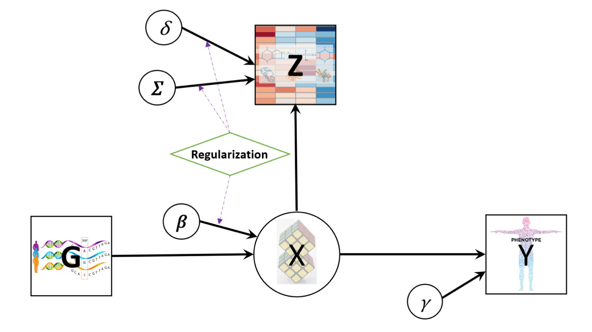
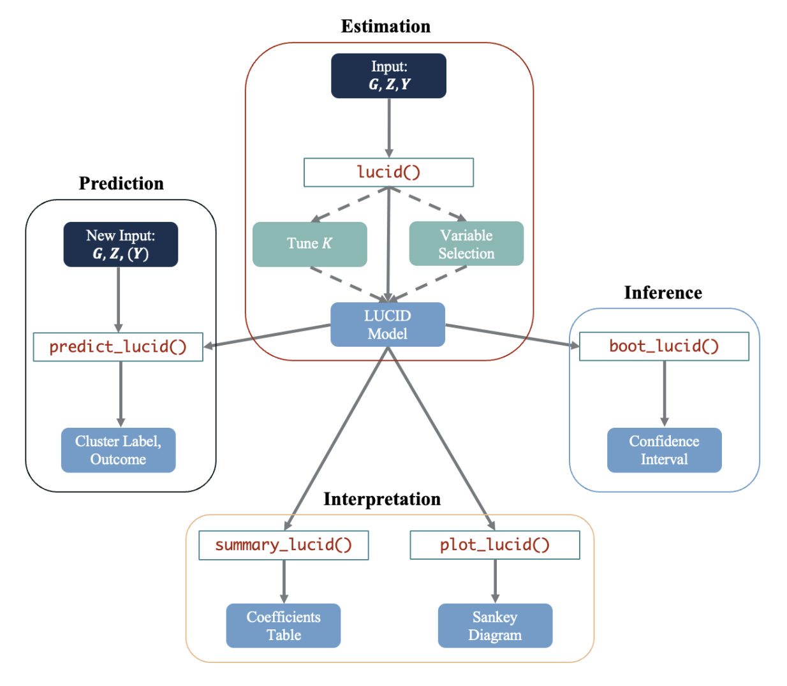
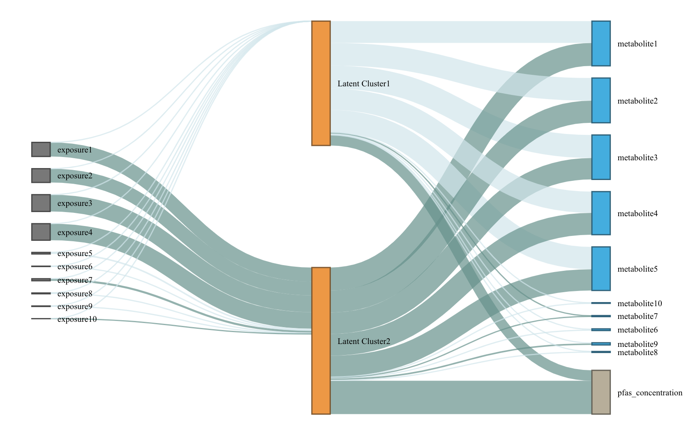

LUCIDus: an R package to implement integrative clustering
Yinqi Zhao, David V. Conti
2026-04-07
Source:vignettes/LUCIDus.Rmd
LUCIDus.RmdIntroduction
Many studies are leveraging current technologies to obtain multiple omics measurements on the same individuals. Guided by biology or the temporal sequence of measurements, these studies often share a common structure that relates long term exposures to intermediate measures capturing transitional processes that ultimately result in an outcome. In this context, we have previously introduced an integrative model to estimate latent unknown clusters (LUCID) aiming to both distinguish unique exposure effects and informative omic effects while jointly estimating subgroups of individuals relevant to the outcome of interest (Peng et al. 2020). LUCIDus is an R package to implement the LUCID model. It provides an integrated clustering framework to researchers, and has numerous downloads (around 20,000 times since it was first introduced according to dlstats (Yu, 2022)). It has also been applied in several environmental epidemiological studies (Jin et al., 2020; Stratakis et al., 2020; Matta et al., 2022).
In this tutorial, we briefly review the statistical background of the model and introduce the workflow of LUCIDus, including model fitting, model selection, interpretation, inference, and prediction. Throughout, we use a realistic but simulated dataset based on an ongoing study, the Human Early Life Exposome study (HELIX) to illustrate the workflow
Introduction to the LUCID model
Genetic/environmental exposures (), omics data () and outcome () are integrated by using a latent cluster variable, which is illustrated by the directed acyclic graph (DAG) below. (A screenshot from the method paper for LUCID)

Let be a matrix with columns representing genetic features/environmental exposures, and rows being the observations; be a matrix of standardized omics data and be a -dimensional vector of outcome. According to the DAG, we assume that , and are linked by a categorical latent variable , consisting of categories. The DAG implies conditional independence. The joint likelihood of the LUCID model is formulated as where is a generic notation standing for all parameters in LUCID. Additionally, we assume follows a multinomial distribution conditioning on , follows a multivariate normal distribution conditioning on and follows a Gaussian (for continuous outcome) or Bernoulli (for binary outcome) distribution conditioning on . As a result, the equation above is finalized as where denotes the softmax function for multinomial distribution and denotes the probability density function (pdf) of the multivariate normal distribution.
Because is not observed, we use the Expectation-Maximization (EM) algorithm to obtain the maximum likelihood estimates (MLE) of LUCID. We denote the observed data (, and ) as . In the E-step, we estimate responsibility below: The responsibility is interpreted as the posterior probability of observation being assigned to latent cluster given the observed data .
In the M-step, we maximize the expectation of joint likelihood below, in terms of .
For more statistical details, please refer to Peng (2020).
General workflow

The LUCIDus package includes five main functions and two auxiliary
functions to implement the analysis framework based on LUCID. Brief
descriptions of each function are listed in the table below. Below we
describe the typical workflow of analyzing integrated data using the
LUCID model. The function lucid() is the primary function
in the package, which fits a LUCID model based on an exposure matrix
(argument G), omics data (argument Z), outcome
data (argument Y), the number of latent clusters
(K; default is 2), and the family of the outcome (argument
family; default is “normal”). If a vector of K
and/or
penalties are supplied, lucid() will automatically conduct
model selection on number of clusters K, select informative
variables in G or Z, or both, and returns a
LUCID model (an R object of class “lucid”) with optimal K
and selected variables in G and/or Z. Several
additional functions can then be applied to a fitted LUCID object.
summary_lucid() summarizes the fitted LUCID model by
producing summary tables of parameter estimation and interpretation.
Visualization is performed via the plot_lucid() function to
create a Sankey diagram showing the interplay among the three components
(G, Z and Y). In addition,
statistical inference can be accomplished for LUCID by constructing
confidence intervals (CIs) based on bootstrap resampling. This is
achieved by the function boot_lucid(). Finally, predictions
on the cluster assignment and the outcome can be obtained by calling the
function predict_lucid(). In practice, it might not be
necessary to implement the entire workflow above. For instance, if we
have prior knowledge on the number of latent clusters K, model selection
for the number of clusters can be skipped. If a given dataset has
limited variables (for example, variables selected based on biological
annotations), then variable selection may not be necessary.
lucid() calls est_lucid() and
tune_lucid() in the backend. The two workhorse functions
are not normally called directly, but they can be useful when user wants
to look into model fitting process in more details.
| Function | Description |
|---|---|
lucid() |
Main function to fit LUCID models, specified by giving integrated data and a distribution of the outcome. It also conducts model selection and variable selection. |
summary_lucid() |
Create tables to summarize a LUCID model. |
plot_lucid() |
Visualize LUCID models through Sankey diagrams. It supports user-defined color palette. |
boot_lucid() |
Derive confidence intervals based on bootstrap resampling. |
pred_lucid() |
Predict latent clsuter and outcome using integrated data. |
est_lucid() |
A workhorse function to fit a LUCID model |
tune_lucid() |
A workhorse function to conduct variable and model selection. It fits LUCID models across the grid of tuning parameters, including number of latent clusters and regularization penalties. It returns the optimal model based on BIC |
Fit LUCID model
We use lucid() function to fit LUCID model.
library(LUCIDus)
# use simulated data
G <- sim_data$G
Z <- sim_data$Z
Y_normal <- sim_data$Y_normal
Y_binary <- sim_data$Y_binary
cov <- sim_data$Covariate
# fit LUCID model with continuous outcome
fit1 <- lucid(G = G, Z = Z, Y = Y_normal, family = "normal", K = 2, seed = 1008)
# fit LUCID model with binary outcome
fit2 <- lucid(G = G, Z = Z, Y = Y_binary, family = "binary", K = 2, seed = 1008)
# fit LUCID model with covariates
fit3 <- lucid(G = G, Z = Z, Y = Y_binary, CoY = cov, family = "binary", K = 2, seed = 1008)
fit4 <- lucid(G = G, Z = Z, Y = Y_binary, CoG = cov, family = "binary", K = 2, seed = 1008)User should be aware of option useY. By default,
useY = TRUE, which means we estimate the latent cluster
using the information from exposure, omics data and outcome (referred to
as supervised LUCID). Otherwise, by setting useY = FALSE,
we only use exposure and omics data to estimate the latent clusters
(referred to as unsupervised LUCID).
# unsupervised lucid
fit5 <- lucid(G = G, Z = Z, Y = Y_normal, family = "normal", K = 2, useY = FALSE, seed = 1008)LUCID allows for flexibe geometric features of the latent cluster,
including volume, shape and orientation. User can use argument
modelName to specify the models. By default, LUCID uses a
VVV model without putting any restraints on the model
shape. Other available models can be found in
mclust::mclustModelNames under the section of multivariate
mixture. If modelName = NULL, LUCID will choose the model
based on data.
# fit LUCID model with automatic selection on covariance models
fit6 <- lucid(G = G, Z = Z, Y = Y_normal, family = "normal", K = 2, modelName = NULL, seed = 1008)
# check the optimal model
fit6$modelName
# fit LUCID model with a specified covariance model
fit7 <- lucid(G = G, Z = Z, Y = Y_normal, family = "normal", K = 2, modelName = "EII", seed = 1008)LUCID has two options for initializing the EM algorithm. The first
method (also the default method) uses mclust and regression
to initialize parameters. The second initialize EM algorithm by random
guess.
Interpreting LUCID model
summary_lucid() returns a coefficient table of LUCID.
The table is divided into 3 parts: (1) association between outcome and
latent cluster; (2) association between latent cluster and omics data;
(3) association between exposure and latent clsuter.
# summarize LUCID model
summary_lucid(fit1)Visualization of LUCID
We use a Sankey diagram to visualize LUCID model. In the Sankey diagram, each node represents a variable in LUCID (exposure, omics data or outcome), each line corresponds to an association between two variables. The color of the line indicates the direction of association (by default, dark blue refers to positive association while light blue refers to negative association) and the width of line indicates the magnitude of association (large effect corresponds to wider line). User can specify color palette of Sankey diagram.
# visualze lucid model via a Snakey diagram
plot_lucid(fit1)
# change node color
plot_lucid(fit1, G_color = "yellow")
plot_lucid(fit1, Z_color = "red")
# change link color
plot_lucid(fit1, pos_link_color = "red", neg_link_color = "green")Regularization
LUCID uses regularization to select variables. Regularization is applied to exposure and omics data separately. For variable selection for exposures (), we apply lasso regression, which is
For omics data, cluster specific means are updated by Cluster specific variance-covariance matrices are updated via their inverse matrices . LUCID uses the graphical lasso algorithm to optimaize the parameter below, where is the empirical estimation of variance-covariance matrix.
User should specify the penalties to arguments Rho_G
(for exposures), Rho_Z_Mu and Rho_Z_Cov (for
omics data). We recommend to choose penalties based on the ranges below:
1. Rho_G: 0 - 1 2. Rho_Z_Mu: 0 - 100 3.
Rho_Z_Cov: 0 - 1 However, the ranges above are empirical
values based on simulation studies. User can try different values based
on their own datasets. In practice, user can pass a vector of penalties
to lucid and let lucid decide the optimal
penalty.
# use LUCID model to conduct integrated variable selection
# select exposure
fit10 <- lucid(G = G, Z = Z, Y = Y_normal, CoY = NULL, family = "normal", K = 2, seed = 1008, Rho_G = 0.1)
fit11 <- lucid(G = G, Z = Z, Y = Y_normal, CoY = NULL, family = "normal", K = 2, seed = 1008, Rho_G = seq(0.01, 0.1, by = 0.01))
# select omics data
fit12 <- lucid(G = G, Z = Z, Y = Y_normal, CoY = NULL, family = "normal", K = 2, seed = 1008, Rho_Z_Mu = 90, Rho_Z_Cov = 0.1, init_par = "random")
fit13 <- lucid(G = G, Z = Z, Y = Y_normal, CoY = NULL, family = "normal", K = 2, seed = 1008, Rho_Z_Mu = seq(10, 50, by = 10), Rho_Z_Cov = 0.5, init_par = "random", verbose_tune = TRUE)Model selection
We use Bayesian Information Criteria (BIC) to choose the optimal number of latent clusters () for LUCID model.
# tune lucid over a grid of K (note this function may take time to run)
tune_lucid <- lucid(G = G, Z = Z, Y = Y_normal, K =2:5)Inference
LUCID uses bootstrap to derive confidence interval for parameters, given a certain confidence interval.
# conduct bootstrap resampling
boot1 <- boot_lucid(G = G, Z = Z, Y = Y_normal, model = fit1, R = 100)
# use 90% CI
boot2 <- boot_lucid(G = G, Z = Z, Y = Y_normal, model = fit1, R = 100, conf = 0.9)Diagnostic plot for bootstrap samples is created by
# check distribution for bootstrap replicates of the variable of interest
plot(boot1$bootstrap, 1)Incorporating missing omics data
The latest version of LUCID allows missingness in omics data. We consider 2 missing patterns in omics data: (1) list-wise missing pattern that only a subset of observations have measured omics data and (2) sporadic missing pattern that missingness is completely at random. We implement a likelihood partition for (1) and an integrated imputation based EM algorithm for (2).
# fit LUCID model with block-wise missing pattern in omics data
Z_miss_1 <- Z
Z_miss_1[sample(1:nrow(Z), 0.3 * nrow(Z)), ] <- NA
fit14 <- lucid(G = G, Z = Z_miss_1, Y = Y_normal, family = "normal", K = 2)
# fit LUCID model with sporadic missing pattern in omics data
Z_miss_2 <- Z
index <- arrayInd(sample(length(Z_miss_2), 0.3 * length(Z_miss_2)), dim(Z_miss_2))
Z_miss_2[index] <- NA
fit15 <- lucid(G = G, Z = Z_miss_2, Y = Y_normal, family = "normal", K = 2, seed = 1008)
# check the imputed omics dataset
head(fit15$Z)